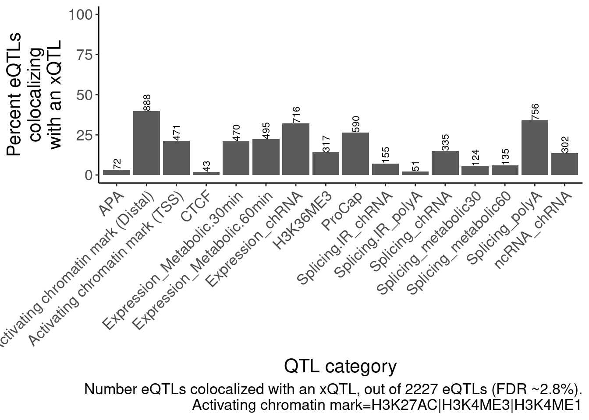

202211107_Figures_sQTLeQTL_effects
Last updated: 2022-12-09
Checks: 6 1
Knit directory: ChromatinSplicingQTLs/analysis/
This reproducible R Markdown analysis was created with workflowr (version 1.6.2). The Checks tab describes the reproducibility checks that were applied when the results were created. The Past versions tab lists the development history.
The R Markdown file has unstaged changes. To know which version of the R Markdown file created these results, you’ll want to first commit it to the Git repo. If you’re still working on the analysis, you can ignore this warning. When you’re finished, you can run wflow_publish to commit the R Markdown file and build the HTML.
Great job! The global environment was empty. Objects defined in the global environment can affect the analysis in your R Markdown file in unknown ways. For reproduciblity it’s best to always run the code in an empty environment.
The command set.seed(20191126) was run prior to running the code in the R Markdown file. Setting a seed ensures that any results that rely on randomness, e.g. subsampling or permutations, are reproducible.
Great job! Recording the operating system, R version, and package versions is critical for reproducibility.
Nice! There were no cached chunks for this analysis, so you can be confident that you successfully produced the results during this run.
Great job! Using relative paths to the files within your workflowr project makes it easier to run your code on other machines.
Great! You are using Git for version control. Tracking code development and connecting the code version to the results is critical for reproducibility.
The results in this page were generated with repository version 4332341. See the Past versions tab to see a history of the changes made to the R Markdown and HTML files.
Note that you need to be careful to ensure that all relevant files for the analysis have been committed to Git prior to generating the results (you can use wflow_publish or wflow_git_commit). workflowr only checks the R Markdown file, but you know if there are other scripts or data files that it depends on. Below is the status of the Git repository when the results were generated:
Ignored files:
Ignored: .DS_Store
Ignored: .Rhistory
Ignored: .Rproj.user/
Ignored: analysis/.Rhistory
Ignored: analysis/figure/
Ignored: code/.DS_Store
Ignored: code/.RData
Ignored: code/._.DS_Store
Ignored: code/._README.md
Ignored: code/._report.html
Ignored: code/.ipynb_checkpoints/
Ignored: code/.snakemake/
Ignored: code/APA_Processing/
Ignored: code/Alignments/
Ignored: code/ChromHMM/
Ignored: code/ENCODE/
Ignored: code/ExpressionAnalysis/
Ignored: code/FastqFastp/
Ignored: code/FastqFastpSE/
Ignored: code/Genotypes/
Ignored: code/H3K36me3_CutAndTag.pdf
Ignored: code/IntronSlopes/
Ignored: code/Metaplots/
Ignored: code/Misc/
Ignored: code/MiscCountTables/
Ignored: code/Multiqc/
Ignored: code/Multiqc_chRNA/
Ignored: code/NonCodingRNA/
Ignored: code/NonCodingRNA_annotation/
Ignored: code/PeakCalling/
Ignored: code/Phenotypes/
Ignored: code/PlotGruberQTLs/
Ignored: code/PlotQTLs/
Ignored: code/ProCapAnalysis/
Ignored: code/QC/
Ignored: code/QTL_SNP_Enrichment/
Ignored: code/QTLs/
Ignored: code/RPKM_tables/
Ignored: code/ReferenceGenome/
Ignored: code/Rplots.pdf
Ignored: code/Session.vim
Ignored: code/SmallMolecule/
Ignored: code/SplicingAnalysis/
Ignored: code/TODO
Ignored: code/Tehranchi/
Ignored: code/bigwigs/
Ignored: code/bigwigs_FromNonWASPFilteredReads/
Ignored: code/config/.DS_Store
Ignored: code/config/._.DS_Store
Ignored: code/config/.ipynb_checkpoints/
Ignored: code/config/config.local.yaml
Ignored: code/dag.pdf
Ignored: code/dag.png
Ignored: code/dag.svg
Ignored: code/debug.ipynb
Ignored: code/debug_python.ipynb
Ignored: code/deepTools/
Ignored: code/featureCounts/
Ignored: code/gwas_summary_stats/
Ignored: code/hyprcoloc/
Ignored: code/igv_session.xml
Ignored: code/log
Ignored: code/logs/
Ignored: code/notebooks/.ipynb_checkpoints/
Ignored: code/pi1/
Ignored: code/rules/.SplicingAnalysis.smk.swp
Ignored: code/rules/.ipynb_checkpoints/
Ignored: code/rules/OldRules/
Ignored: code/rules/notebooks/
Ignored: code/scratch/
Ignored: code/scripts/.ipynb_checkpoints/
Ignored: code/scripts/GTFtools_0.8.0/
Ignored: code/scripts/__pycache__/
Ignored: code/scripts/liftOverBedpe/liftOverBedpe.py
Ignored: code/snakemake.dryrun.log
Ignored: code/snakemake.log
Ignored: code/snakemake.sbatch.log
Ignored: code/test.introns.bed
Ignored: code/test.introns2.bed
Ignored: data/.DS_Store
Ignored: data/._.DS_Store
Ignored: data/._20220414203249_JASPAR2022_combined_matrices_25818_jaspar.txt
Ignored: data/GWAS_catalog_summary_stats_sources/._list_gwas_summary_statistics_6_Apr_2022-10.csv
Ignored: data/GWAS_catalog_summary_stats_sources/._list_gwas_summary_statistics_6_Apr_2022-11.csv
Ignored: data/GWAS_catalog_summary_stats_sources/._list_gwas_summary_statistics_6_Apr_2022-2.csv
Ignored: data/GWAS_catalog_summary_stats_sources/._list_gwas_summary_statistics_6_Apr_2022-3.csv
Ignored: data/GWAS_catalog_summary_stats_sources/._list_gwas_summary_statistics_6_Apr_2022-4.csv
Ignored: data/GWAS_catalog_summary_stats_sources/._list_gwas_summary_statistics_6_Apr_2022-5.csv
Ignored: data/GWAS_catalog_summary_stats_sources/._list_gwas_summary_statistics_6_Apr_2022-6.csv
Ignored: data/GWAS_catalog_summary_stats_sources/._list_gwas_summary_statistics_6_Apr_2022-7.csv
Ignored: data/GWAS_catalog_summary_stats_sources/._list_gwas_summary_statistics_6_Apr_2022-8.csv
Ignored: data/GWAS_catalog_summary_stats_sources/._list_gwas_summary_statistics_6_Apr_2022.csv
Ignored: data/Metaplots/.DS_Store
Untracked files:
Untracked: code/snakemake_profiles/slurm/__pycache__/
Unstaged changes:
Modified: analysis/20221202_ProcessSmallMolecule.Rmd
Modified: analysis/Figures_BensTasksFromOutline.Rmd
Modified: code/rules/QTLTools.smk
Modified: code/scripts/GenometracksByGenotype
Modified: code/scripts/PlotColocFromHyprcolocResults.R
Modified: code/scripts/hyprcoloc_gwas2.R
Modified: data/Phenotypes_recode_for_Plotting.txt
Note that any generated files, e.g. HTML, png, CSS, etc., are not included in this status report because it is ok for generated content to have uncommitted changes.
These are the previous versions of the repository in which changes were made to the R Markdown (analysis/Figures_BensTasksFromOutline.Rmd) and HTML (docs/Figures_BensTasksFromOutline.html) files. If you’ve configured a remote Git repository (see ?wflow_git_remote), click on the hyperlinks in the table below to view the files as they were in that past version.
| File | Version | Author | Date | Message |
|---|---|---|---|---|
| Rmd | cad3bd6 | Benjmain Fair | 2022-11-16 | misc updates |
knitr::opts_chunk$set(echo = TRUE, warning = F, message = F)
library(tidyverse)── Attaching packages ─────────────────────────────────────── tidyverse 1.3.0 ──✔ ggplot2 3.3.6 ✔ purrr 0.3.4
✔ tibble 3.1.7 ✔ dplyr 1.0.9
✔ tidyr 1.2.0 ✔ stringr 1.4.0
✔ readr 1.3.1 ✔ forcats 0.4.0── Conflicts ────────────────────────────────────────── tidyverse_conflicts() ──
✖ dplyr::filter() masks stats::filter()
✖ dplyr::lag() masks stats::lag()library(RColorBrewer)
library(data.table)
Attaching package: 'data.table'The following objects are masked from 'package:dplyr':
between, first, lastThe following object is masked from 'package:purrr':
transposelibrary(qvalue)
# Set theme
theme_set(
theme_classic() +
theme(text=element_text(size=16, family="Helvetica")))
# I use layer a lot, to rotate long x-axis labels
Rotate_x_labels <- theme(axis.text.x = element_text(angle = 45, vjust = 1, hjust=1))Intro
Here I will plot some figures that will likely be used in publication. I will write each code block to be self-contained, so you could in theory re-make a figure object just by running the set up-code block at the top of this Rmd, then running the code-block corresponding to the figure described in the section title. and to save the figure object, you would often also need to run the following code block with a call to the ggsave function - since Rmarkdown is buggy when I call ggsave I have been putting ggsave calls in seperate code blocks with eval=F for Rmarkdown rendering). I wrote all the relative filepaths assuming this code would be run from the analysis directory.
test theme
#test theme
p <- ggplot(mtcars, aes(mpg, wt, color=as.factor(cyl))) +
geom_point() +
scale_colour_brewer(palette = "Set2", type="qual")
p +
Rotate_x_labels
Figure1
highlight prevalence of NMD-targeting and unannotated introns in chRNA
genes <- read_tsv("../code/ExpressionAnalysis/polyA/ExpressedGeneList.txt", col_names = c("chrom", "start", "stop", "name", "score", "strand"))
leafviz_script.dat <- fread("../code/ReferenceGenome/Annotations/gencode.v34.primary_assembly.annotation.gtf_all_introns.bed.gz", col.names=c("chrom", "start", "stop", "gene", "gene_id","strand","transcript", "intron_num", "transcript_tag", "tag"))
IntronAnnotations <- leafviz_script.dat %>%
group_by(chrom, start, stop, strand, gene_id) %>%
summarise(Annotation = case_when(
all(transcript_tag=="nonsense_mediated_decay") ~ "Unique to nonsense_mediated_decay",
all(transcript_tag=="non_stop_decay") ~ "Unique to non_stop_decay",
all(transcript_tag=="processed_transcript") ~ "Unique to processed_transcript",
all(transcript_tag=="retained_intron") ~ "Unique to retained_intron",
any(transcript_tag=="protein_coding") ~ "In protein_coding",
TRUE ~ "Other"
)) %>%
ungroup()
SpliceJunctionCountTables <- Sys.glob("../code/SplicingAnalysis/leafcutter/NormalizedPsiTables/PSI.JunctionCounts.*.bed.gz") %>%
setNames(str_replace(., "../code/SplicingAnalysis/leafcutter/NormalizedPsiTables/PSI.JunctionCounts.(.+?).bed.gz", "\\1")) %>%
lapply(fread)
AddIntronAnnotations <- function(df){
df %>%
left_join(
IntronAnnotations %>%
dplyr::select(`#Chrom`=chrom, start, end=stop, strand, gene_id, Annotation),
by=c("#Chrom", "start", "end", "strand")) %>%
dplyr::select(1:6, gene_id, Annotation, everything()) %>%
replace_na(list(Annotation="Unannotated"))
}
Long.table <- lapply(SpliceJunctionCountTables, AddIntronAnnotations) %>%
lapply(pivot_longer,names_to="Sample", values_to="Count", -c(1:8)) %>%
bind_rows(.id="Dataset")
P.i.dat <- Long.table %>%
group_by(Sample, Dataset, Annotation) %>%
summarise(SumCounts = sum(Count, na.rm=T)) %>%
ungroup() %>%
group_by(Sample, Dataset) %>%
mutate(Percent = SumCounts / sum(SumCounts) * 100) %>%
ungroup() %>%
mutate(Dataset = recode(Dataset, !!!c("Expression.Splicing"="polyA RNA", "chRNA.Expression.Splicing"="chRNA", "MetabolicLabelled.30min"="30min 4sU RNA", "MetabolicLabelled.60min"="60min 4sU RNA"))) %>%
mutate(Dataset = factor(Dataset, levels=c("chRNA", "30min 4sU RNA", "60min 4sU RNA", "polyA RNA")))
P.i <-
P.i.dat %>%
filter(Annotation %in% c("In protein_coding", "Unique to nonsense_mediated_decay", "Unannotated")) %>%
mutate(Annotation = recode(Annotation, !!!c("In protein_coding"="Annotated in functional isoform", "Unique to nonsense_mediated_decay"="Annotated in NMD-targeted isoform"))) %>%
mutate(Annotation=factor(Annotation, levels=c("Annotated in functional isoform", "Annotated in NMD-targeted isoform", "Unannotated"))) %>%
ggplot(aes(x=Dataset, y=Percent, color=Annotation)) +
geom_jitter(alpha=0.2, size=0.5) +
geom_boxplot(outlier.shape=NA, color='black', fill=NA) +
facet_wrap(~Annotation, scales="free_y", labeller = label_wrap_gen(width=14)) +
scale_colour_brewer(type="qual", palette="Dark2") +
theme(axis.text.x = element_text(angle = 45, vjust = 1, hjust=1), legend.position = "none") +
labs(y=str_wrap("Percent of splice junction reads", 20), x=NULL) +
guides(colour = guide_legend(override.aes = list(alpha = 1))) +
theme(strip.text.x = element_text(size = 12))
P.iggsave("/project2/yangili1/carlos_and_ben_shared/rough_figs/OriginalSubplots/RoughDraftFig_1C_FractionSpliceJunctionsByCategory.pdf", P.i, height=3, width=5.5)
IntronAnnotations %>%
write_tsv("../code/SplicingAnalysis/IntronTypeAnnotations.txt.gz")## Figure out NMD discrepency in earlier version of NMD prevalence
## Previous NMD intron list
NMD.transcript.introns <- read_tsv("../code/SplicingAnalysis/Annotations/NMD/NMD_trancsript_introns.bed.gz", col_names=c("chrom", "start", "stop", "name", "score", "strand")) %>%
mutate(stop=stop+1) %>%
unite(intron, chrom:stop, strand)
Non.NMD.transcript.introns <- read_tsv("../code/SplicingAnalysis/Annotations/NMD/NonNMD_trancsript_introns.bed.gz", col_names=c("chrom", "start", "stop", "name", "score", "strand")) %>%
mutate(stop=stop+1) %>%
unite(intron, chrom:stop, strand)
Old.NMD.specific.introns <- setdiff(NMD.transcript.introns$intron, Non.NMD.transcript.introns$intron)
Old.NMD.specific.introns %>% unique() %>% length()
New.NMD.specific.introns <- IntronAnnotations %>%
filter(Annotation == "Unique to nonsense_mediated_decay") %>%
unite(intron, chrom:stop, strand) %>% pull(intron) %>% unique()
setdiff(Old.NMD.specific.introns, New.NMD.specific.introns) %>% length()
SpecificToNew <- setdiff(New.NMD.specific.introns, Old.NMD.specific.introns)
Non.NMD.transcript.introns %>%
mutate(IsSpecificToNew = intron %in% SpecificToNew) %>%
count(IsSpecificToNew)
NMD.transcript.introns %>%
mutate(IsSpecificToNew = intron %in% SpecificToNew) %>%
count(IsSpecificToNew)I think the discrepency arises from how I parse gtf files with grep and bedparse versus using leafcutter’s gtf2leafcutter script.
Numbers of QTLs
PeaksToTSS <- Sys.glob("../code/Misc/PeaksClosestToTSS/*_assigned.tsv.gz") %>%
setNames(str_replace(., "../code/Misc/PeaksClosestToTSS/(.+?)_assigned.tsv.gz", "\\1")) %>%
lapply(read_tsv) %>%
bind_rows(.id="ChromatinMark") %>%
mutate(GenePeakPair = paste(gene, peak, sep = ";")) %>%
distinct(ChromatinMark, peak, gene, .keep_all=T)
PhenotypeAliases <- read_tsv("../data/Phenotypes_recode_for_Plotting.txt")
PhenotypeColors <- readxl::read_excel("../data/ColorsForPhenotypes.xlsx")
PhenotypeColors <- readxl::read_excel("../data/ColorsForPhenotypes.xlsx")
dat.coloc.tidy <- read_tsv("../code/hyprcoloc/Results/ForColoc/MolColocNonRedundantFullSplicing/tidy_results_OnlyColocalized.txt.gz") %>%
separate(phenotype_full, into=c("PC", "P"), sep=";", remove=F)
PhenotypeList <- dat.coloc.tidy %>% pull(PC) %>% unique() %>% union(c("polyA.Splicing.Subset_YRI", "polyA.IER.Subset_YRI"))
GroupedPermutationPassPhenotypes <- c("polyA.Splicing", "MetabolicLabelled.30min.Splicing", "MetabolicLabelled.60min.Splicing", "APA_Nuclear", "APA_Total", "polyA.Splicing.Subset_YRI")
UngroupedPermutationPassPhenotypes <- setdiff(PhenotypeList, GroupedPermutationPassPhenotypes)
UngroupedQTLs <- paste0("../code/QTLs/QTLTools/", UngroupedPermutationPassPhenotypes,"/PermutationPass.FDR_Added.txt.gz") %>%
setNames(str_replace(., "../code/QTLs/QTLTools/(.+?)/PermutationPass.FDR_Added.txt.gz", "\\1")) %>%
lapply(fread, sep=' ') %>%
bind_rows(.id="PC")
#TEMP UNTIL FINISHED SNAKEMAKE
GroupedPermutationPassPhenotypes <- setdiff(GroupedPermutationPassPhenotypes, c("APA_Nuclear", "APA_Total"))
GroupedQTLs <- paste0("../code/QTLs/QTLTools/", GroupedPermutationPassPhenotypes,"/GroupedPermutationPass.FDR_Added.txt.gz") %>%
setNames(str_replace(., "../code/QTLs/QTLTools/(.+?)/GroupedPermutationPass.FDR_Added.txt.gz", "\\1")) %>%
lapply(fread, sep=' ') %>%
bind_rows(.id="PC")
AllQTLs <- bind_rows(GroupedQTLs, UngroupedQTLs) %>%
group_by(PC) %>%
summarise(
TestFeats = n(),
NumQTLs = sum(q<0.1, na.rm=T)
) %>%
filter(!PC %in% c("MetabolicLabelled.30min.IER", "MetabolicLabelled.30min.Splicing", "MetabolicLabelled.60min.IER", "MetabolicLabelled.60min.Splicing"))
#TODO
# AllQTLs %>%
# ggplot(aes(x=PC, color=)) +
# geom_col()Figure2
Colocalization framework
PhenotypeAliases <- read_tsv("../data/Phenotypes_recode_for_Plotting.txt")
dat.coloc.tidy <- read_tsv("../code/hyprcoloc/Results/ForColoc/MolColocNonRedundantFullSplicing/tidy_results_OnlyColocalized.txt.gz") %>%
separate(phenotype_full, into=c("PC", "P"), sep=";", remove=F)
dat.coloc <- read_tsv("../code/hyprcoloc/Results/ForColoc/MolColocNonRedundantFullSplicing/results.txt.gz")
# Find nice example with eQTL+hQTL effect and seperate sQTL effect
dat.to.plot <- dat.coloc.tidy %>%
left_join(PhenotypeAliases) %>%
filter(PC %in% c("polyA.Splicing", "H3K27AC", "Expression.Splicing.Subset_YRI")) %>%
group_by(Locus, iteration) %>%
mutate(
SplicingCluster = all(PC == "polyA.Splicing"),
ChromatinExpressionCluster = all(PC %in% c("H3K27AC", "Expression.Splicing.Subset_YRI")) & any(PC == "Expression.Splicing.Subset_YRI") ) %>%
filter(n() > 1) %>%
ungroup() %>%
group_by(Locus) %>%
filter(any(SplicingCluster) & any(ChromatinExpressionCluster)) %>%
ungroup() %>%
group_by(PC, Locus, iteration) %>%
slice_head(n=2) %>%
ungroup()dir.create("../code/scratch/PlotExampleColocs")
dat.coloc %>%
inner_join(
dat.to.plot %>%
dplyr::select(GeneLocus=Locus, Trait=phenotype_full)
) %>%
group_by(GeneLocus) %>%
filter(n()>2) %>%
ungroup()
write_tsv("../code/scratch/PlotExampleColocs/List.tsv")cd /project2/yangili1/bjf79/ChromatinSplicingQTLs/code
conda activate r_essentials
Rscript scripts/PlotColocFromHyprcolocResults.R scratch/PlotExampleColocs/List.tsv scratch/PlotExampleColocs/Plot pdf
heatmap of effects between types of phenotypes highlighting the expected strong enrichment in enhancers/promoters
I’ve about many different ways of making a heatmap. See this notebook. They all show something slightly different. We might consider including a couple of these different heatmaps, but for the main figures we probably only have space to show one. I suggest showing the heatmap of effect size correlations among colocalized phenotypes. My reasons are as follows:
- This type of heatmap doesn’t even attempt to try to explain “what fraction of eQTLs are explained my x mechanism”, but I think that is ok because that question is a bit redudnant with the next plot.
- I think this plot of correlation effect sizes is a nice segway to understanding some subsequent analyses (Carlos’ amplitude versus directional transcription QTL effects are based on concordance of effect sizes), and also later analsis of sQTL vs eQTL effect sizes
- I think this plot is perhaps the most convincing version of the plot to say something along the lines of “most ncRNAs are pleiotropic transcription effects, since their directions are by in large consistent with eQTLs which I would not expect if the lncRNAs were effecting target genes through complex mechanisms that involve lncRNA-mediated recruitment of trans-factors”
I can quantify the strength of these correlations a few different ways. For example, spearman correlation coef, pearson coef, fraction same sign effects, etc. I think fraction same sign effects might be the most intuitive and also will have higher numbers which might just look nicer from a glance - so let’s start there. Also, for sake of space, I am going to make a few versions of this plot but I’m just going to save the version that has a smaller subset of interesting phenotypes worth focusing on in the main text.
PhenotypeAliases <- read_tsv("../data/Phenotypes_recode_for_Plotting.txt")
dat.coloc.tidy <- read_tsv("../code/hyprcoloc/Results/ForColoc/MolColocNonRedundantFullSplicing/tidy_results_OnlyColocalized.txt.gz") %>%
separate(phenotype_full, into=c("PC", "P"), sep=";", remove=F)
dat.coloc.tidy$PC %>% unique() [1] "polyA.Splicing" "MetabolicLabelled.30min"
[3] "MetabolicLabelled.60min" "H3K27AC"
[5] "H3K4ME3" "H3K4ME1"
[7] "chRNA.IER" "ProCap"
[9] "CTCF" "chRNA.Expression_ncRNA"
[11] "Expression.Splicing.Subset_YRI" "chRNA.Splicing"
[13] "MetabolicLabelled.30min.Splicing" "MetabolicLabelled.60min.Splicing"
[15] "chRNA.Expression.Splicing" "H3K36ME3"
[17] "APA_Nuclear" "APA_Total"
[19] "polyA.IER" "MetabolicLabelled.30min.IER"
[21] "MetabolicLabelled.60min.IER" P <- dat.coloc.tidy %>%
filter(PC %in% c("CTCF","ProCap","APA_Total","chRNA.Expression_ncRNA","Expression.Splicing.Subset_YRI","H3K27AC", "H3K4ME1", "H3K4ME3", "polyA.Splicing", "chRNA.Splicing", "MetabolicLabelled.30min", "MetabolicLabelled.60min", "H3K36ME3", "chRNA.Expression.Splicing")) %>%
left_join(
PhenotypeAliases %>% dplyr::select(PC, ShorterAlias)
) %>%
dplyr::select(-PC) %>%
dplyr::select(PC = ShorterAlias, everything()) %>%
# pull(PC) %>% unique()
mutate(PC = factor(PC, levels=c("CTCF", "H3K4ME1", "H3K27AC", "H3K4ME3", "ProCap", "ncRNA_chRNA", "H3K36ME3", "Expression_chRNA", "Expression_Metabolic.30min", "Expression_Metabolic.60min", "Expression_polyA","Splicing_chRNA", "Splicing_polyA", "APA_Total"))) %>%
left_join(., ., by=c("Locus", "snp")) %>%
filter(!((P.x == P.y) & (PC.x == PC.y))) %>%
group_by(PC.x, PC.y) %>%
# summarise(cor = cor(beta.x, beta.y, method="spearman")) %>%
summarise(
NumSameSign = sum(sign(beta.x)==sign(beta.y)),
n = n(),
cor = sum(sign(beta.x)==sign(beta.y))/n()) %>%
ungroup() %>%
complete(PC.x, PC.y) %>%
mutate(label = paste0("frac(",NumSameSign, ",", n, ")")) %>%
ggplot(aes(x=PC.x, y=PC.y, fill=cor)) +
geom_raster() +
geom_text(aes(label = label),parse = TRUE, color="black", size=1) +
scale_fill_gradient2(midpoint=0.5, limits=c(0,1)) +
scale_x_discrete(expand=c(0,0)) +
scale_y_discrete(expand=c(0,0), limits=rev) +
theme_classic() +
theme(axis.text.x = element_text(angle = 45, vjust = 1, hjust=1)) +
labs(x="TraitA Phenotype class", y="TraitB Phenotype class", fill=str_wrap("Fraction same sign effects", 10),
caption = "Number and relative sign of colocalized trait pairs")
P
ggsave("/project2/yangili1/carlos_and_ben_shared/rough_figs/OriginalSubplots/RoughDraftFig_2B_EffectSizeCorrelationsHeatmap.pdf", P, height=5, width=7)eQTLs colocalize with many different xQTLs, but chromatin effects are the strongest (something like the bar plot I showed in lab meeting with the number of eGenes that colocalize with an xQTL)
TotalNum.eQTLs <- read_delim("../code/QTLs/QTLTools/Expression.Splicing.Subset_YRI/PermutationPassForColoc.txt.gz", delim=' ') %>%
mutate(q = qvalue(adj_beta_pval)$qvalues)
Num_eQTLs_attemptedColoc <- TotalNum.eQTLs %>%
filter(adj_beta_pval < 0.01) %>%
nrow()
Num_eQTLs_attemptedColoc[1] 2227TotalNum.eQTLs %>%
filter(q < 0.01) %>%
nrow()[1] 1577TotalNum.eQTLs %>%
filter(adj_beta_pval < 0.01) %>%
pull(q) %>% max()[1] 0.027759PhenotypeAliases <- read_tsv("../data/Phenotypes_recode_for_Plotting.txt")
PeaksToTSS <- Sys.glob("../code/Misc/PeaksClosestToTSS/*_assigned.tsv.gz") %>%
setNames(str_replace(., "../code/Misc/PeaksClosestToTSS/(.+?)_assigned.tsv.gz", "\\1")) %>%
lapply(read_tsv) %>%
bind_rows(.id="ChromatinMark") %>%
mutate(GenePeakPair = paste(gene, peak, sep = ";")) %>%
distinct(ChromatinMark, peak, gene, .keep_all=T)
dat.coloc.tidy <- read_tsv("../code/hyprcoloc/Results/ForColoc/MolColocNonRedundantFullSplicing/tidy_results_OnlyColocalized.txt.gz") %>%
separate(phenotype_full, into=c("PC", "P"), sep=";")
dat.coloc.tidy %>%
left_join(PhenotypeAliases) %>%
group_by(Locus) %>%
filter(any(PC=="Expression.Splicing.Subset_YRI")) %>%
dplyr::rename(Grouping.PC.ID = ShorterAlias2) %>%
count(Grouping.PC.ID) %>%
ungroup() %>%
count(Grouping.PC.ID, name="Num_eQTLs_coloc") %>%
filter(!Grouping.PC.ID=="Expression_polyA") %>%
ggplot(aes(x=Grouping.PC.ID, y=Num_eQTLs_coloc/Num_eQTLs_attemptedColoc*100)) +
geom_col() +
geom_text(aes(label=Num_eQTLs_coloc), angle=90, hjust=0, size=3) +
scale_y_continuous(limits = c(0,100)) +
Rotate_x_labels +
labs(caption=str_wrap("Number eQTLs colocalized with an xQTL, out of 2227 eQTLs (FDR ~2.8%)", 30), y=str_wrap("Percent eQTLs colocalizing with an xQTL", 15), x="QTL category")dat.coloc.tidy %>%
left_join(PhenotypeAliases) %>%
mutate(GenePeakPair = paste(Locus, P, sep=';')) %>%
mutate(Grouping.PC.ID = case_when(
(PC %in% c("H3K4ME3", "H3K4ME1", "H3K27AC")) & (GenePeakPair %in% PeaksToTSS$GenePeakPair) ~ "Activating chromatin mark (TSS)",
(PC %in% c("H3K4ME3", "H3K4ME1", "H3K27AC")) ~ "Activating chromatin mark (Distal)",
TRUE ~ ShorterAlias2
)) %>%
group_by(Locus) %>%
filter(any(PC=="Expression.Splicing.Subset_YRI")) %>%
count(Grouping.PC.ID) %>%
ungroup() %>%
count(Grouping.PC.ID, name="Num_eQTLs_coloc") %>%
filter(!Grouping.PC.ID=="Expression_polyA") %>%
ggplot(aes(x=Grouping.PC.ID, y=Num_eQTLs_coloc/Num_eQTLs_attemptedColoc*100)) +
geom_col() +
geom_text(aes(label=Num_eQTLs_coloc), angle=90, hjust=0, size=3) +
scale_y_continuous(limits = c(0,100)) +
# scale_x_discrete(labels = function(x) str_wrap(x, width = 20)) +
Rotate_x_labels +
labs(caption=str_wrap("Number eQTLs colocalized with an xQTL, out of 2227 eQTLs (FDR ~2.8%).\nActivating chromatin mark=H3K27AC|H3K4ME3|H3K4ME1", 70), y=str_wrap("Percent eQTLs colocalizing with an xQTL", 15), x="QTL category")
P <- bind_rows(
dat.coloc.tidy %>%
left_join(PhenotypeAliases) %>%
mutate(GenePeakPair = paste(Locus, P, sep=';')) %>%
mutate(Grouping.PC.ID = case_when(
(PC %in% c("H3K4ME3", "H3K4ME1", "H3K27AC")) & (GenePeakPair %in% PeaksToTSS$GenePeakPair) ~ "Activating chromatin mark (TSS)",
(PC %in% c("H3K4ME3", "H3K4ME1", "H3K27AC")) ~ "Activating chromatin mark (Distal)",
TRUE ~ ShorterAlias2
)),
dat.coloc.tidy %>%
left_join(PhenotypeAliases) %>%
mutate(Grouping.PC.ID = case_when(
(PC %in% c("H3K4ME3", "H3K4ME1", "H3K27AC")) ~ "Any activating chromatin mark (Distal|TSS)",
TRUE ~ ShorterAlias2
)) %>%
filter(Grouping.PC.ID == "Any activating chromatin mark (Distal|TSS)")
) %>%
group_by(Locus) %>%
filter(any(PC=="Expression.Splicing.Subset_YRI")) %>%
count(Grouping.PC.ID) %>%
ungroup() %>%
count(Grouping.PC.ID, name="Num_eQTLs_coloc") %>%
filter(!Grouping.PC.ID=="Expression_polyA") %>%
filter(Grouping.PC.ID %in% c("APA", "Activating chromatin mark (Distal)", "Activating chromatin mark (TSS)", "Any activating chromatin mark (Distal|TSS)", "CTCF", "Splicing_polyA", "ncRNA_chRNA")) %>%
mutate(Grouping.PC.ID = factor(Grouping.PC.ID, levels=c("CTCF", "Activating chromatin mark (Distal)", "Activating chromatin mark (TSS)", "Any activating chromatin mark (Distal|TSS)", "ncRNA_chRNA", "Splicing_polyA", "APA"))) %>%
ggplot(aes(x=Grouping.PC.ID, y=Num_eQTLs_coloc/Num_eQTLs_attemptedColoc*100)) +
geom_col() +
geom_text(aes(label=Num_eQTLs_coloc), angle=90, hjust=0, size=6) +
scale_y_continuous(limits = c(0,60)) +
scale_x_discrete(labels = function(x) str_wrap(x, width = 20)) +
Rotate_x_labels +
labs(caption=str_wrap("Number eQTLs colocalized with an xQTL, out of 2227 eQTLs (FDR ~2.8%).\nActivating chromatin mark=H3K27AC|H3K4ME3|H3K4ME1", 70), y=str_wrap("Percent eQTLs colocalizing with an xQTL", 15), x="QTL category")
Pggsave("/project2/yangili1/carlos_and_ben_shared/rough_figs/OriginalSubplots/RoughDraftFig_2C_NumEQTLsThatColocWithXQTL.pdf", P, height=5, width=7)Figure3
Scatter plot of effect sizes for unannotated, basic, non-basic, and NMD-targeting introns. Estimate of number of primary (and maybe secondary) eQTLs explained by splicing mechanisms
NMD.transcript.introns <- fread("../code/SplicingAnalysis/Annotations/NMD/NMD_trancsript_introns.bed.gz", col.names=c("chrom", "start", "stop", "name", "score", "strand")) %>%
mutate(stop=stop+1) %>%
unite(intron, chrom:stop, strand)
Non.NMD.transcript.introns <- fread("../code/SplicingAnalysis/Annotations/NMD/NonNMD_trancsript_introns.bed.gz", col.names=c("chrom", "start", "stop", "name", "score", "strand")) %>%
mutate(stop=stop+1) %>%
unite(intron, chrom:stop, strand)
NMD.specific.introns <- setdiff(NMD.transcript.introns$intron, Non.NMD.transcript.introns$intron)
Intron.Annotations.basic <- fread("../code/SplicingAnalysis/regtools_annotate_combined/basic.bed.gz") %>%
filter(known_junction ==1) %>%
unite(intron, chrom, start, end, strand)
Introns.Annotations.comprehensive <- fread("../code/SplicingAnalysis/regtools_annotate_combined/comprehensive.bed.gz") %>%
filter(known_junction ==1) %>%
unite(intron, chrom, start, end, strand)
Introns.Annotations.all <- fread("../code/SplicingAnalysis/regtools_annotate_combined/comprehensive.bed.gz") %>%
unite(intron, chrom, start, end, strand)
PhenotypeAliases <- read_tsv("../data/Phenotypes_recode_for_Plotting.txt")
PC.ShortAliases <- PhenotypeAliases %>%
dplyr::select(PC, ShorterAlias) %>% deframe()
PeaksToTSS <- Sys.glob("../code/Misc/PeaksClosestToTSS/*_assigned.tsv.gz") %>%
setNames(str_replace(., "../code/Misc/PeaksClosestToTSS/(.+?)_assigned.tsv.gz", "\\1")) %>%
lapply(read_tsv) %>%
bind_rows(.id="ChromatinMark") %>%
mutate(GenePeakPair = paste(gene, peak, sep = ";")) %>%
distinct(ChromatinMark, peak, gene, .keep_all=T)
TopSNPEffects.ByPairs <- fread("../code/pi1/PairwisePi1Traits.P.all.txt.gz")
coloc.tidy <- fread("../output/hyprcoloc_results/ForColoc/MolColocStandard/hyprcoloc.results.OnlyColocalized.Stats.txt.gz") %>%
separate(phenotype_full, into=c("PC", "P"), sep=";")
coloc.tidy.pairwise <- left_join(
coloc.tidy,
coloc.tidy %>%
dplyr::select(-iteration, -ColocPr, -RegionalPr, -TopSNPFinemapPr),
by=c("Locus"),
suffix=c("1", "2")
) %>%
filter(!(P1==P2 & PC1 == PC2)) %>%
filter(snp1 == snp2) %>%
dplyr::select(ColocalizedTopSNP = snp1, GeneLocus=Locus, everything(), -snp2) %>%
unite(TraitPair, P1, PC1, P2, PC2, remove=F)
sessionInfo()R version 3.6.1 (2019-07-05)
Platform: x86_64-pc-linux-gnu (64-bit)
Running under: CentOS Linux 7 (Core)
Matrix products: default
BLAS/LAPACK: /software/openblas-0.2.19-el7-x86_64/lib/libopenblas_haswellp-r0.2.19.so
locale:
[1] LC_CTYPE=en_US.UTF-8 LC_NUMERIC=C LC_TIME=C
[4] LC_COLLATE=C LC_MONETARY=C LC_MESSAGES=C
[7] LC_PAPER=C LC_NAME=C LC_ADDRESS=C
[10] LC_TELEPHONE=C LC_MEASUREMENT=C LC_IDENTIFICATION=C
attached base packages:
[1] stats graphics grDevices utils datasets methods base
other attached packages:
[1] qvalue_2.16.0 data.table_1.14.2 RColorBrewer_1.1-2 forcats_0.4.0
[5] stringr_1.4.0 dplyr_1.0.9 purrr_0.3.4 readr_1.3.1
[9] tidyr_1.2.0 tibble_3.1.7 ggplot2_3.3.6 tidyverse_1.3.0
loaded via a namespace (and not attached):
[1] Rcpp_1.0.5 lubridate_1.7.4 assertthat_0.2.1 rprojroot_2.0.2
[5] digest_0.6.20 utf8_1.1.4 plyr_1.8.4 R6_2.4.0
[9] cellranger_1.1.0 backports_1.4.1 reprex_0.3.0 evaluate_0.15
[13] highr_0.9 httr_1.4.4 pillar_1.7.0 rlang_1.0.5
[17] readxl_1.3.1 rstudioapi_0.14 whisker_0.3-2 R.oo_1.22.0
[21] R.utils_2.9.0 rmarkdown_1.13 labeling_0.3 splines_3.6.1
[25] munsell_0.5.0 broom_1.0.0 compiler_3.6.1 httpuv_1.5.1
[29] modelr_0.1.8 xfun_0.31 pkgconfig_2.0.2 htmltools_0.5.3
[33] tidyselect_1.1.2 workflowr_1.6.2 fansi_0.4.0 crayon_1.3.4
[37] dbplyr_1.4.2 withr_2.5.0 later_0.8.0 R.methodsS3_1.7.1
[41] grid_3.6.1 jsonlite_1.6 gtable_0.3.0 lifecycle_1.0.1
[45] DBI_1.1.0 git2r_0.26.1 magrittr_1.5 scales_1.1.0
[49] cli_3.3.0 stringi_1.4.3 farver_2.1.0 reshape2_1.4.3
[53] fs_1.5.2 promises_1.0.1 xml2_1.3.2 ellipsis_0.3.2
[57] generics_0.1.3 vctrs_0.4.1 tools_3.6.1 glue_1.6.2
[61] hms_0.5.3 fastmap_1.1.0 yaml_2.2.0 colorspace_1.4-1
[65] rvest_0.3.5 knitr_1.39 haven_2.3.1